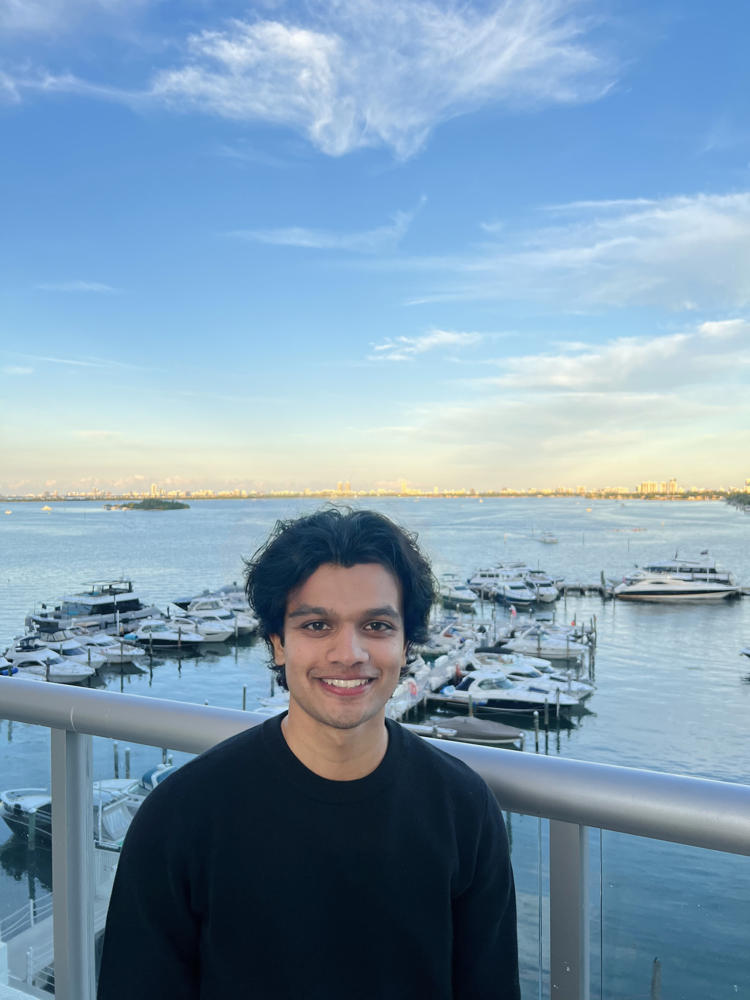

About Me
I'm a Member of Technical Staff at Liquid AI. I work on research and engineering problems across the foundation model stack: architecture design, pretraining infrastructure, and model compression.
I earned my master's and bachelor's degrees in Computer Science from Stanford University. My technical interests span foundation model development and building AI-native applications.
In my free time, I enjoy golfing, skiing, and documenting life — whether through a camera or through text.
Reach me at [firstname][lastname]@gmail.com.
Work
LFM2 Technical Report
Technical report for Liquid Foundation Models 2.
arXiv preprint, 2025
33 authors in alphabetical order
Simple, Scalable Reasoning via Iterated Summarization
A method for scaling language model reasoning over long contexts.
ICML 2025 Workshop on Long Context Foundation Models
ICML 2025 Workshop on AI for Math
* Equal contribution